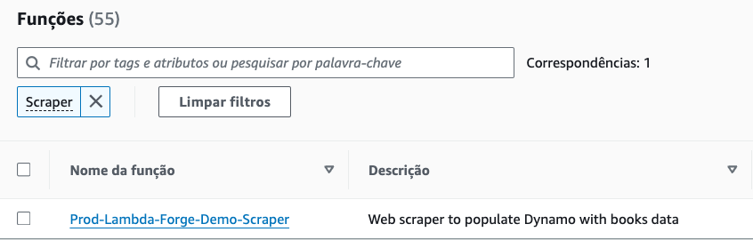
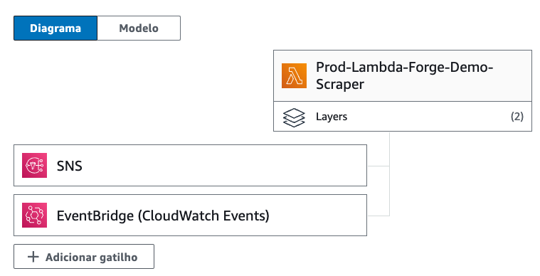

Creating a Serverless Web Scraper: Integrating DynamoDB, SNS and EventBridge
In this section, we will develop a serverless web scraper designed to extract informations about books from https://books.toscrape.com/ utilizing the Requests library and Beautiful Soup. The retrieved data will be stored in DynamoDB, enabling us to perform queries via an endpoint.
Additionally, we will cover how to configure our Lambda function to execute daily, ensuring our dataset remains current and accurate.
Dynamo DB
Considering the write access to our database will be exclusively reserved for the scraper, maintaining three separate databases for each deployment stage is unnecessary. Therefore, let's just create a singular DynamoDB table designed to serve all three environments uniformly.
Instead of setting up each environment's details separately in the cdk.json file, like we did to the users table, we'll make things simpler by creating a single Books table on the AWS console and placing its ARN directly into our DynamoDB class.
| infra/services/dynamo_db.py | |
|---|---|
Lambda Layers
Another essential aspect of our project involves leveraging external libraries like requests and Beautiful Soup for our web scraping tasks. Since these libraries are not built into Python's standard library, we'll need to incorporate them into our AWS Lambda functions as Lambda Layers.
Incorporating Requests and Beautiful Soup via Public Layers
The requests and Beautiful Soup libraries are widely used and recognized for their utility in web scraping and data extraction tasks. Fortunately, AWS Lambda offers these libraries as public layers, simplifying the process of integrating them into your projects without the need to create custom layers.
For projects utilizing Python 3.9, we can leverage the specific Amazon Resource Names (ARNs) for both requests and Beautiful Soup libraries made available through Klayers. This provides an efficient way to add these libraries to your Lambda functions. You can explore the complete list of public layers for Python 3.9 in the us-east-2 region here.
Here are the ARNs you'll need:
-
Requests:
arn:aws:lambda:us-east-2:770693421928:layer:Klayers-p39-requests:19 -
Beautiful Soup 4:
arn:aws:lambda:us-east-2:770693421928:layer:Klayers-p39-beautifulsoup4:7
Let's add them both to our Layers class.
from aws_cdk import aws_lambda as _lambda
class Layers:
def __init__(self, scope) -> None:
self.requests_layer = _lambda.LayerVersion.from_layer_version_arn(
scope,
id="RequestsLayer",
layer_version_arn="arn:aws:lambda:us-east-2:770693421928:layer:Klayers-p39-requests:19",
)
self.bs4_layer = _lambda.LayerVersion.from_layer_version_arn(
scope,
id="BS4Layer",
layer_version_arn="arn:aws:lambda:us-east-2:770693421928:layer:Klayers-p39-beautifulsoup4:7",
)
Additionally, include the libraries in the requirements.txt file.
Developing The Web Scraper
Our web scraper will extract the following details: upc, title, price, category, stock, description and url.
Let's create it with forge.
forge function scraper --description "Web scraper to populate Dynamo with books data" --no-api --belongs-to books
Remember, although users can access the scraper's results, the scraper itself won't serve as a direct endpoint. We've included the --no-api flag in our Forge setup to signify that this function won't be connected to the API Gateway. Its primary role is to enrich our database. Additionally, the --belongs-to flag was used to organize it within the books directory, aligning it with related functions planned for the future.
Here is the structure created for the books directory:
functions
├── books
├── scraper
│ ├── __init__.py
│ ├── config.py
│ ├── main.py
│ └── unit.py
└── utils
└── __init__.py
Building a Web Scraper with Pagination Handling Using a While Loop
Our focus is on understanding how AWS resources are integrated with Lambda Forge, not on the intricacies of developing a web scraper. Therefore, we will not cover the source code in detail. Nevertheless, we encourage you to experiment with creating your own web scraper, as the core concepts we're discussing will remain applicable.
Below, you'll find the source code accompanied by comments that explain the concepts it illustrates.
import os
import re
import boto3
import requests
from bs4 import BeautifulSoup
BASE_URL = "https://books.toscrape.com"
def lambda_handler(event, context):
# DynamoDB table name for storing books information
BOOKS_TABLE_NAME = os.environ.get("BOOKS_TABLE_NAME")
# Initialize a DynamoDB resource
dynamodb = boto3.resource("dynamodb")
# Reference the DynamoDB table
books_table = dynamodb.Table(BOOKS_TABLE_NAME)
# Determine the URL to scrape, defaulting to BASE_URL
url = event.get("url") or BASE_URL
while url:
# Fetch and parse the webpage at the given URL
response = requests.get(url)
soup = BeautifulSoup(response.text, "html.parser")
for article in soup.find_all("article"):
# Extract book details
title = article.find("h3").find("a").get("title").title()
price = article.find("p", {"class": "price_color"}).get_text()[1:]
# Correct the href if it doesn't contain "catalogue/"
href = article.find("h3").find("a").get("href")
if "catalogue/" not in href:
href = f"catalogue/{href}"
# Fetch and parse the book detail page
url = f"{BASE_URL}/{href}"
detail_response = requests.get(url)
detail_soup = BeautifulSoup(detail_response.text, "html.parser")
# Extract additional details from the book detail page
upc = detail_soup.find("th", string="UPC").find_next("td").get_text().strip()
category = (
detail_soup.find("ul", {"class", "breadcrumb"})
.find_all("li")[2]
.text.strip()
)
stock = (
detail_soup.find("p", {"class": "instock availability"}).get_text().strip()
)
stock = re.search(r"\d+", stock)[0]
description = detail_soup.find("div", {"id": "product_description"})
if description:
description = description.find_next("p").get_text()
# Construct the item to store in DynamoDB
item = {
"PK": upc,
"category": category,
"title": title,
"price": price,
"description": description,
"stock": stock,
"url": url,
}
# Store the item in DynamoDB
books_table.put_item(Item=item)
# Check for and process the next page
next_page = soup.find("li", {"class": "next"})
if next_page:
next_href = next_page.find("a")["href"]
if "catalogue/" not in next_href:
next_href = f"catalogue/{next_href}"
url = f"{BASE_URL}/{next_href}"
else:
url = None
Due to AWS's predefined operational constraints, Lambda functions are explicitly engineered for rapid execution, with a maximum duration limit of 15 minutes.
To evaluate the efficiency of our function, we will incorporate print statements that monitor execution time throughout our local testing phase.
The execution time approaches nearly 17 minutes, exceeding the maximum duration allowed for a Lambda function. Consequently, we need to seek alternative strategies to ensure our scraper remains compliant with the limitations.
Utilizing a while loop within a solitary AWS Lambda function to perform book data extraction from the website is functional yet lacks efficiency and scalability. This is particularly pertinent within the AWS ecosystem, which is rich in services tailored for distributed computing and intricate task orchestration.
Building a Web Scraper with Pagination Handling Using SNS
Amazon Simple Notification Service (SNS) is a fully managed messaging service provided by AWS, enabling seamless communication between distributed systems. It operates on a publish-subscribe model, where messages are published to topics and subscribers receive notifications from these topics. With support for various types of subscriptions including HTTP, SQS, Lambda, email, and SMS, SNS ensures reliable and scalable message delivery across multiple AWS regions. It also offers features like message filtering, retry mechanisms, and dead-letter queues to enhance message processing and system resilience.
Instead of using a while loop to process all pages in a single function, let's design a Lambda function to process a maximum of 10 pages. After completing these pages, it should dispatch a message with the URL of the next starting page to an SNS topic. This triggers another Lambda function dedicated to harvesting book information from the subsequent 10 pages.
As an initial step, we have to integrate SNS into our Services class.
A new sns.py file was created on infra/services, so create a new SNS topic on the AWS console and place it's ARN on the SNS class.
from aws_cdk import aws_lambda_event_sources
import aws_cdk.aws_sns as sns
class SNS:
def __init__(self, scope, resources, stage) -> None:
self.stage = stage
self.books_scraper_topic = sns.Topic.from_topic_arn(
scope,
"BooksScraperTopic",
topic_arn="$TOPIC-ARN",
)
def create_trigger(self, topic, function, stages=None):
if stages and self.stage not in stages:
return
sns_subscription = aws_lambda_event_sources.SnsEventSource(topic)
function.add_event_source(sns_subscription)
Note that the SNS class contains a handy helper method, streamlining the process of establishing triggers that connect an SNS topic to a Lambda function.
Now, let's revise the original code to eliminate the while loop that processes all pages and instead publish a message to SNS containing the URL of the new starting point.
import os
import re
import json
import time
import boto3
import requests
from bs4 import BeautifulSoup
BASE_URL = "https://books.toscrape.com"
def lambda_handler(event, context):
# Get the DynamoDB table name and SNS topic ARN from environment variables.
BOOKS_TABLE_NAME = os.environ.get("BOOKS_TABLE_NAME", "Books")
SNS_TOPIC_ARN = os.environ.get("SNS_TOPIC_ARN")
# Initialize the DynamoDB and SNS clients.
dynamodb = boto3.resource("dynamodb")
sns = boto3.client("sns")
# Reference the DynamoDB table.
books_table = dynamodb.Table(BOOKS_TABLE_NAME)
# Determine the URL to scrape, defaulting to BASE_URL
try:
url = json.loads(event['Records'][0]['Sns']['Message'].replace("'", '"'))["url"]
except:
url = BASE_URL
# Keep track of the number of pages processed
pages_processed = 0
# Maximum number of pages to process
MAX_PAGES = 10
while pages_processed < MAX_PAGES:
response = requests.get(url)
soup = BeautifulSoup(response.text, "html.parser")
for article in soup.find_all("article"):
# Extract book details
title = article.find("h3").find("a").get("title").title()
price = article.find("p", {"class": "price_color"}).get_text()[1:]
# Correct the href if it doesn't contain "catalogue/"
href = article.find("h3").find("a").get("href")
if "catalogue/" not in href:
href = f"catalogue/{href}"
# Fetch and parse the book detail page
detail_url = f"{BASE_URL}/{href}"
detail_response = requests.get(detail_url)
detail_soup = BeautifulSoup(detail_response.text, "html.parser")
# Extract additional details from the book detail page
upc = detail_soup.find("th", string="UPC").find_next("td").get_text().strip()
category = (
detail_soup.find("ul", {"class", "breadcrumb"})
.find_all("li")[2]
.text.strip()
)
description = detail_soup.find("div", {"id": "product_description"})
stock = (
detail_soup.find("p", {"class": "instock availability"})
.get_text().strip()
)
stock = re.search(r"\d+", stock)[0]
if description:
description = description.find_next("p").get_text()
# Construct the item to store in DynamoDB
item = {
"PK": upc,
"category": category,
"title": title,
"price": price,
"description": description,
"stock": stock,
"url": detail_url,
}
# Store the item in DynamoDB
books_table.put_item(Item=item)
# Increment the number of pages processed
pages_processed += 1
# Check for the next page
next_page = soup.find("li", {"class": "next"})
if not next_page:
break
# Correct the href if it doesn't contain "catalogue/"
next_href = next_page.find("a")["href"]
if "catalogue/" not in next_href:
next_href = f"catalogue/{next_href}"
# Construct the URL for the next page
url = f"{BASE_URL}/{next_href}"
if next_page:
# Publish a message to the SNS topic to process the next 10 pages
sns.publish(
TopicArn=SNS_TOPIC_ARN,
Message=str({"url": url}),
Subject=f"Process next {MAX_PAGES} pages of books",
)
Let's measure how long that function took to run locally:
Fantastic, it took under 3 minutes!
This approach ensures that we never exceed the 15 minutes timeout limit, as each time a new message is published to SNS, the timeout counter is refreshed, allowing continuous execution without interruption.
Configuring The Web Scraper
Now that we have developed our function, let's proceed to configure the necessary AWS resources for its executions on the cloud.
from infra.services import Services
class ScraperConfig:
def __init__(self, services: Services) -> None:
function = services.aws_lambda.create_function(
name="Scraper",
path="./functions/books",
description="Web scraper to populate Dynamo with books data",
directory="scraper",
timeout=5,
layers=[services.layers.requests_layer, services.layers.bs4_layer],
environment={
"BOOKS_TABLE_NAME": services.dynamo_db.books_table.table_name,
"SNS_TOPIC_ARN": services.sns.books_scraper_topic.topic_arn
}
)
services.dynamo_db.books_table.grant_write_data(function)
services.sns.create_trigger(services.sns.books_scraper_topic, function)
services.sns.books_scraper_topic.grant_publish(function)
This configuration file outlines the setup and permissions for a Lambda function, detailing:
- Timeout: Specifies a maximum duration of 5 minutes for Lambda execution.
- Layers: Adds the requests and bs4 layers to the Lambda function.
- Environment Variables: Establishes the required environment variables for operation.
- DynamoDB Access: Provides the Lambda function with write access to the DynamoDB Books table.
- SNS Trigger: Utilizes the SNS class helper method to link an SNS topic with the production Lambda function.
- SNS Publishing Permissions: Empowers the Lambda function to publish messages to the books topic.
Scheduling Executions With Event Bridge
The current configuration file equips us to execute the Lambda function as needed. However, it necessitates manual intervention for each run, which is an impractical approach for dynamic tasks like web scraping. The crux of the issue lies in the volatile nature of our target: website data, such as book prices and inventory, can change unpredictably.
To mitigate this, we must ensure our web scraper operates automatically at regular intervals, thus capturing updates without manual oversight. By leveraging AWS EventBridge, we can schedule our Lambda function to run periodically, ensuring our data collection remains current with minimal effort.
To integrate AWS EventBridge for scheduling tasks, we begin by creating an EventBridge class using Forge. This is achieved with the following command:
After executing the command, a new file named event_bridge.py is generated within the infra/services directory. Let's explore its contents and functionalities:
import aws_cdk.aws_events as events
import aws_cdk.aws_events_targets as targets
class EventBridge:
def __init__(self, scope, resources, stage) -> None:
self.scope = scope
self.stage = stage
def create_rule(self, name, expression, target, stages=None):
if stages is not None and self.stage not in stages:
return
events.Rule(
self.scope,
name,
schedule=events.Schedule.expression(expression),
targets=[targets.LambdaFunction(handler=target)],
)
This class introduces a streamlined method for creating EventBridge rules, enabling the scheduling of Lambda function executions.
Before we proceed, it's crucial to acknowledge that we're operating within a multi-stage deployment environment. Our immediate task involves configuring the Scraper function to activate based on a scheduled rule. However, a pertinent question arises: Should we initiate the triggering of three distinct functions simultaneously? Of course not, especially when considering efficiency and resource management. More precisely, is there a need for creating three scrapers when, in reality, only one is enough to populate the database?
Bearing this consideration in mind, it's wise to implement a few minor adjustments. Our goal is to streamline the process, thereby avoiding the creation of unnecessary scrapers.
First, let's modify the LambdaStack class to send also the context to the ScraperConfig class.
Now, let's modify our configuration class to accept the context as an additional argument in its constructor.
By incorporating the context, we can strategically condition the creation of the function based on the deployment stage.
from infra.services import Services
class ScraperConfig:
def __init__(self, services: Services, context) -> None:
if context.stage != "Prod":
return
function = services.aws_lambda.create_function(
name="Scraper",
path="./functions/books",
description="Web scraper to populate Dynamo with books data",
directory="scraper",
timeout=5,
layers=[services.layers.requests_layer, services.layers.bs4_layer],
environment={
"BOOKS_TABLE_NAME": services.dynamo_db.books_table.table_name,
"SNS_TOPIC_ARN": services.sns.books_scraper_topic.topic_arn
}
)
services.dynamo_db.books_table.grant_write_data(function)
services.sns.create_trigger(services.sns.books_scraper_topic, function)
services.sns.books_scraper_topic.grant_publish(function)
services.event_bridge.create_rule(
name="ScraperRule",
expression="cron(0 12 ? * * *)",
target=function,
)
The cron expression cron(0 12 ? * * *) configures a schedule to initiate an action every day at 12 PM UTC.
Now, we're streamlining our deployment by creating the Lambda function and its essential resources exclusively for the staging environment that will be actively utilized.
Developing an Endpoint for Data Access
Let's create an endpoint that returns all the stored data from our database or allows filtering by category, facilitating easy access and manipulation of the data.
forge function list_books --method "GET" --description "A function to fetch books from DynamoDB, optionally filtered by category." --belongs-to books --public
The file has been created within the books directory, as initially planned.
functions
├── books
├── list_books
│ ├── __init__.py
│ ├── config.py
│ ├── integration.py
│ ├── main.py
│ └── unit.py
├── scraper
│ ├── __init__.py
│ ├── config.py
│ ├── main.py
│ └── unit.py
└── utils
└── __init__.py
To optimize data retrieval by category from our DynamoDB table, we need to create a Global Secondary Index (GSI) on the Books Table. This index enables efficient querying and filtering of data based on the category attribute, without the need for scanning the entire table.
Go to the DynamoDB section within the AWS Management Console and select the Books Table. Click on the Indexes tab next to the table details, then press Create index. In the creation form, set the partition key to your category column. Name your index as CategoryIndex. After configuring these details, review your settings and confirm by clicking Create index.
Having established our index, we can utilize it to precisely and efficiently fetch data by category when needed, significantly optimizing our query performance.
import json
import os
from dataclasses import dataclass
from typing import List, Optional
import boto3
from boto3.dynamodb.conditions import Key
@dataclass
class Input:
category: Optional[str]
@dataclass
class Book:
id: str
title: str
price: str
category: str
stock: str
description: str
url: str
@dataclass
class Output:
data: List[Book]
def lambda_handler(event, context):
# Initialize a DynamoDB client
dynamodb = boto3.resource("dynamodb")
# Get the name of the table from the environment variable
BOOKS_TABLE_NAME = os.environ["BOOKS_TABLE_NAME"]
# Create a DynamoDB table resource
table = dynamodb.Table(BOOKS_TABLE_NAME)
# Check if a category is specified in the query string parameters
category = (
event["queryStringParameters"].get("category")
if event["queryStringParameters"]
else None
)
processed_items = []
last_evaluated_key = None
# Handle pagination
while True:
scan_kwargs = {}
if category:
scan_kwargs.update({
'IndexName': "CategoryIndex",
'KeyConditionExpression': Key("category").eq(category.title())
})
if last_evaluated_key:
scan_kwargs['ExclusiveStartKey'] = last_evaluated_key
if category:
response = table.query(**scan_kwargs)
else:
response = table.scan(**scan_kwargs)
items = response.get("Items", [])
# Renaming 'PK' attribute to 'id' in each item
processed_items.extend(
[{"id": item["PK"], **{k: v for k, v in item.items() if k != "PK"}} for item in items]
)
last_evaluated_key = response.get('LastEvaluatedKey')
if not last_evaluated_key:
break
return {"statusCode": 200, "body": json.dumps({"data": processed_items})}
Now Let's configure the function
from infra.services import Services
class ListBooksConfig:
def __init__(self, services: Services) -> None:
function = services.aws_lambda.create_function(
name="ListBooks",
path="./functions/books",
description="A function to fetch books from DynamoDB, optionally filtered by category.",
directory="list_books",
environment={"BOOKS_TABLE_NAME": services.dynamo_db.books_table.table_name},
)
services.api_gateway.create_endpoint("GET", "/books", function, public=True)
services.dynamo_db.books_table.grant_read_data(function)
services.dynamo_db.add_query_permission(services.dynamo_db.books_table, function)
In addition to the foundational setup facilitated by Forge, this configuration file plays a crucial role in further customizing our function. It specifically focuses on defining environment variables and granting read permissions to the function for accessing the Books table.
Moreover, we leverage a specialized helper method within our DynamoDB class to extend Query permissions to the Lambda function. This distinction is critical as querying entails more specific privileges beyond data reading, ensuring our function has the precise access needed for optimal operation.
Launching Our Web Scraper and Data Visualization Endpoint
Great, we're all set to deploy our function.
Now, we'll commit and push our changes to the remote repository, allowing our CI/CD pipeline to handle the deployment seamlessly.
# Add changes to the staging area
git add .
# Commit the changes with a descriptive message
git commit -m "Deploying Web Scraper and Data Visualization Endpoint"
# Push changes to the 'dev' branch.
git push origin dev
# Switch to the 'staging' branch, merge changes from 'dev', and push
git checkout staging
git merge dev
git push origin staging
# Switch to the 'main' branch, merge changes from 'staging', and push
git checkout main
git merge staging
git push origin main
Once the pipeline execution concludes, expect to see a single scraper function established.

Additionally, this function will be configured with two distinct triggers: an SNS trigger and an Event Bridge trigger, each serving a unique purpose in the workflow.

Now we can also test new endpoints to list the scraped data.
- Dev: https://tbd4it3lph.execute-api.us-east-2.amazonaws.com/dev/books
- Staging: https://8kwcovaj0f.execute-api.us-east-2.amazonaws.com/staging/books
- Prod: https://s6zqhu2pg1.execute-api.us-east-2.amazonaws.com/prod/books
Congratulations! 🎉 You've successfully created your first web scraper using Lambda Layers, SNS, DynamoDB and Event Bridge using Lambda Forge. 🚀